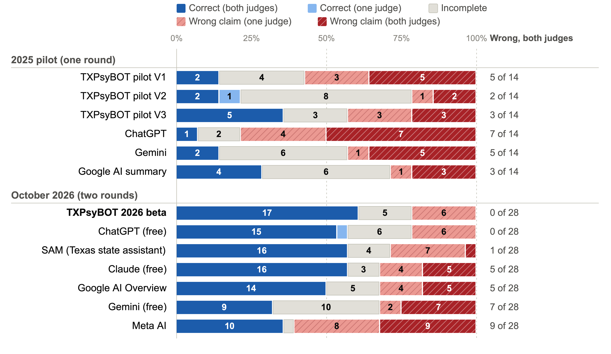
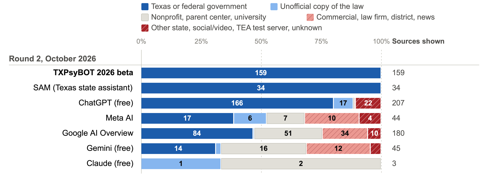

TXPsyBOT Beta: Piloting an AI-Powered Legal and Ethical Assistant for School Psychology Practice
Dowon Choi, Ph.D.¹ Eric Schoonard, M.A.¹ Saptarshi Bhowmik, Ph.D.² Sarah Yip, M.S.¹ Angela Helom, M.S.¹
¹ Texas Woman’s University ² ARM Holdings
TXPsyBOT is an AI assistant for Texas school psychologists and trainees. Practitioners must apply federal, state, and local rules that are spread across agency websites and change often; free AI tools answer fast but can be wrong, out of date, or about another state. Ask TXPsyBOT a special-education or practice question in plain language: it answers only from 181 curated Texas and federal sources, cites the section it relied on, and says “not covered” instead of guessing. Status: beta, under evaluation with practitioners and trainees.
How TXPsyBOT Works
Your question in plain language
Searches 180+ curated sources (i.e., Knowledge Base) Texas Education Code, 19 TAC, IDEA, TEA guidance, licensing rules, etc.
Checks every citation from Knowledge Base against the text it retrieved
Answers with section citations or says it does not know
Why this reduces made-up answers: it reads the law first and answers from it, like an open-book exam, instead of answering from memory.
From Prototype to Beta
2024 prototype (V1): Mixed in information from beyond its documents.
2025 pilot (V2, V3): Limited to its documents. V2 declined too often; V3 balanced answering and caution.
2026 beta: 181 sources, re-ranking, and citation checks.
What We Did
- 14 legal and procedural questions from the 2025 pilot (one unclear question dropped).
- TXPsyBOT and six free public AI tools, October 2026, asked twice, each in a new chat.
- Two AI judges from different companies graded every answer against an expert-reviewed key, without knowing which tool wrote it.
- Every source shown with an answer was classified by type.
Next Steps
Validation with real users: an IRB-approved study in which practitioners and trainees use the beta on their own questions.
50-question test set: a larger set, including Texas law changes from 2024–2026, asked of the same public tools; full results in a forthcoming paper.
Ethical guidance: route each question to law, ethics, or both, and answer ethics questions from the NASP and APA codes.

Note. Two AI judges (Claude Opus 5.5, GPT-5.5) graded each answer without knowing which tool wrote it; raw verdicts shown for all tools. Expert review of the six TXPsyBOT answers flagged by only one judge: one real error, two incomplete, three judge errors. Judges agreed on 82% of outcomes (κ = .71) and 97% of facts (κ = .90).

Note. Round 2 sources, classified by web address or, where none was shown, by source name; right column = number of sources. Claude searched the web on 2 of 14 questions. “TEA test server” = Texas Education Agency pages that require a login.
Key Findings
of TXPsyBOT’s 159 sources were Texas or federal statutes, rules, or agency documents (SAM, the Texas state assistant, also 100%). Google 47%, Gemini 31%.
8 of 14ChatGPT answers linked at least one page that no longer exists or requires a login.
0 of 28TXPsyBOT answers both judges called wrong, tied with ChatGPT. SAM 1; Claude and Google 5; Gemini 7; Meta 9.
Where Public AI Went Wrong
“How often can my child be reevaluated?”
Public AI: Google AI Overview: no more than once a year “per discipline or service” (speech, OT, academics). Meta AI said the same.
The law: once a year in total unless parent and district agree; at least every 3 years (34 CFR §300.303(b)).
TXPsyBOT: once a year unless both agree, plus the 3-year minimum, with citations. See all answers →
“When does a child become an adult student?”
Public AI: Claude, both rounds: rights do not transfer at 18 if the student chose “supported decision-making.”
The law: that is an alternative to guardianship; rights still transfer unless a court finds incompetence or appoints a guardian (TEC §29.017).
TXPsyBOT: correct in both rounds, including the court-ordered early transfer. See all answers →
Limitations: 14 questions, one state; AI judges, with expert review of TXPsyBOT’s flags only; public tools change often.
More on the companion site
All 14 questions, every tool’s answers, how each was graded, and references. Open the companion site →
Contact Dr. Dowon Choi for participation in the research: dchoi2@twu.edu
NASP Practice Model Domain 10: Legal, Ethical, and Professional Practice · Built by school psychology and computer science, designed to be replicated for other states · Research prototype; not legal advice